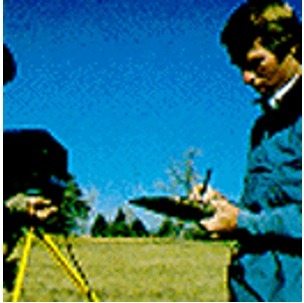
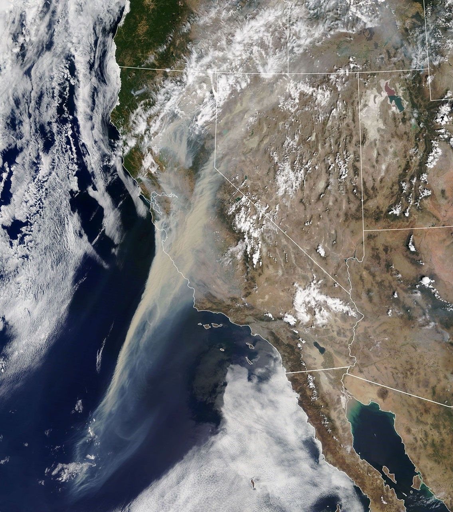
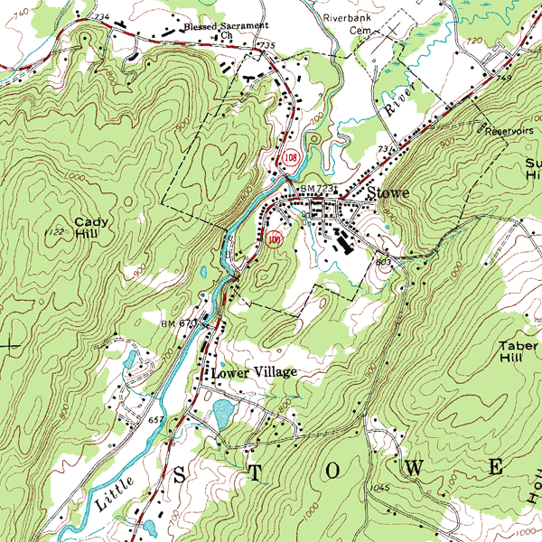
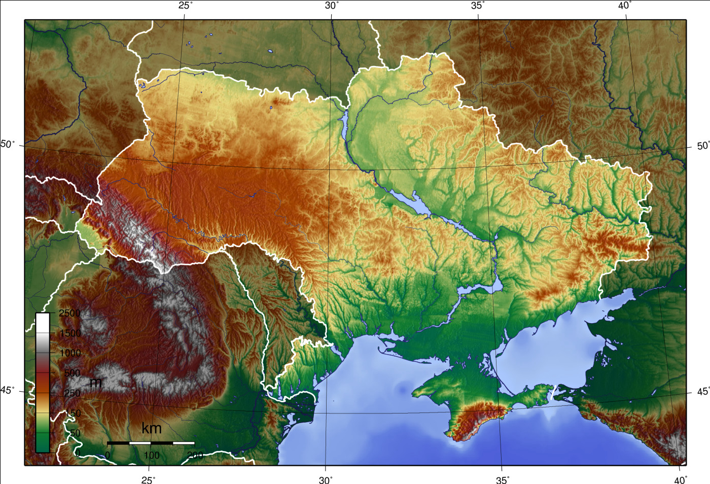

Супутниковий погляд
Добре бачить великі простори й зміни, але потребує правильної інтерпретації.
Тема КТП: Методи географічних досліджень. Сучасні наукові дослідження Землі і винаходи людства.

Спочатку — гіпотеза. Наприкінці її доведеться захистити доказами.
Супутник бачить пожежу, повінь або зміну берегової лінії зверху. Але чи достатньо одного знімка, щоб зрозуміти що сталося, чому і що робити далі?
Не бійтеся помилитися: нас цікавить, чи зміниться відповідь після роботи з картами й даними.
Чотири різні джерела — чотири різні типи інформації.
Добре бачить великі простори й зміни, але потребує правильної інтерпретації.

Дим, пожежі, повені й хмарність можна відстежувати майже в реальному часі.

Показує рельєф, висоти, дороги, русла й деталі конкретної місцевості.
Дає вимірювання «тут і зараз» і допомагає перевіряти карти та дистанційні дані.
Одна карта не може відповісти на всі географічні питання. Перевіримо це буквально.

Одне завдання — один найкращий перший крок. Зображення дають контекст, але рішення треба пояснити.
Дивимося не «для галочки»: ловимо способи отримання географічних даних.
Тепер карта, супутниковий знімок і джерела працюють разом.
Він може показати дим, осередки й територію. Але сам по собі не обов’язково доводить точну причину займання, стан конкретної дороги чи безпечність маршруту.
Тобто: супутник дає сильний доказ, але не весь доказ.
Для справжніх супутникових шарів: NASA Worldview ↗ • Copernicus Browser ↗.
Просторове поширення й теплові аномалії.
Стан конкретного місця, дороги, ґрунту й рослинності.
Що може бути під загрозою та як дістатися.
Прогноз напрямку поширення диму й вогню.
Може бути сигналом, але без перевірки слабкий як доказ.
Занадто загальна для локальної події.
Зображення: NASA Earth Observatory / NASA Visible Earth; топографічна карта — USGS / Wikimedia Commons; польове геодезичне фото — Wikimedia Commons. Карта — OpenStreetMap contributors.